4．存在定理
在19世纪的偏微分方程那一章，在同一标题下，我们已经说到，当数学家们发现求解特殊微分方程的问题越来越困难时，他们就转向这样的问题：给定一个微分方程，它对于给定的初始条件和边界条件是否有解？当然希望在常微分方程中也会出现同样的转变。存在性问题被忽视了这么长时间，部分原因是微分方程发生在物理问题和几何问题中，而在直觉上则很清楚，这些问题是有解的。
柯西是考虑微分方程解的存在性问题的第一个人，并成功地给出了两个方法。第一个方法可以应用于
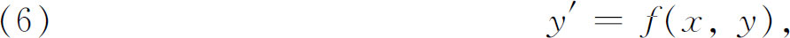
这是在1820年到1830年间某一时候创立的，综述在他的《分析练习》中(23)。
这方法的本质可以从欧拉的著作(24)中找到，它利用了在积分作为和的极限中所包含的同样的想法。柯西想证明有一个而且只有一个y＝f（x）满足（6）式，并且适合给定的初始条件y0＝f（x0）。他分（x0，x）为n部分Δx0，Δx1，…，Δxn-1并作
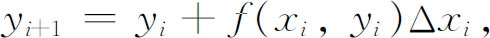
其中xi是Δxi中x的任一值。然后定义
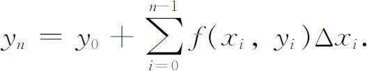
现在柯西证明当n趋于无穷时，yn收敛到一个唯一的函数
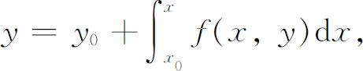
并证明这个函数满足（6）式和初始条件。
柯西假定f（x，y）和fy在由区间（x0，x）和（y0，y）所确定的矩形内部对x，y的所有实值都是连续的。1876年利普希茨（Rudolph Lipschitz，1832—1903）把这定理的假设减弱了(25)。他的基本条件是：存在常数K使得对矩形｜x-x0｜≤a，
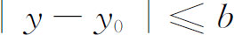
内所有的（x，y1）和（x，y2）（即具有同一横坐标的任意两点），满足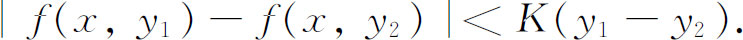
这个条件叫利普希茨条件，而这条存在性定理就叫做柯西-利普希茨定理。
柯西的建立微分方程解的存在性的第二个方法，即控制函数或优势函数的方法，比他的第一个方法可有更广泛的应用，柯西把它用到了复数域。这个方法表述于1839年到1842年间《周报》上的一系列论文中(26)。柯西把这方法叫做极限的计算（calcul des limites），因为他提供了下极限，在这些下极限范围内，已经建立了存在性的解保证收敛。这个方法为布里奥和布凯所简化，这两个人的做法(27)已经成为标准的了。
为了说明这方法，我们注意它是怎样应用于
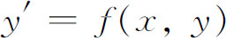
的，其中f关于x和y是解析的。所要建立的定理这样说：对于
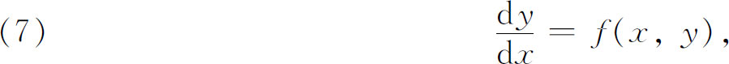
如果函数f（x，y）在P0＝（x0，y0）的邻域内解析，那么微分方程有唯一解y（x），它在x0的邻域内解析，而当x＝x0时它等于y0。这解可以用级数
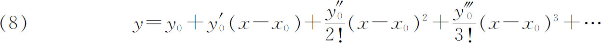
表示，其中y′是（x0，y0）处的dy/dx，而
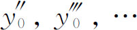
的意义类似，其中的导数由原来微分方程经逐次微分来确定，y则作为x的函数来对待。证明的方法我们仅给一概要。首先利用这样的事实：因为f（x，y）在（x0，y0）的邻域内解析，为了方便，我们取（x0，y0）为（0，0），于是有一个以x0＝0为圆心、以a为半径的圆和一个以y0＝0为圆心、以b为半径的圆，使f（x，y）在其中解析。于是对落在相应圆中的一切x，y的值，f（x，y）有一个上界M。现在获得级数（8）的方法本身就保证它形式地满足（7），于是问题是要证明这级数收敛。
为达到这目的，设立优势函数
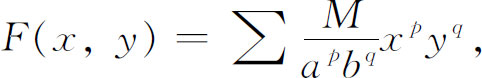
它是
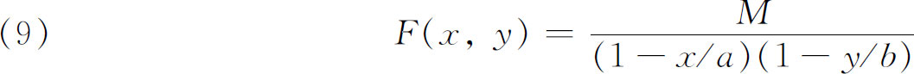
的展开式。然后证明
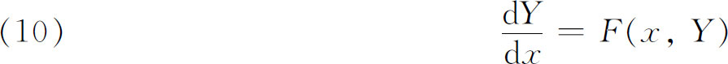
的级数解，即
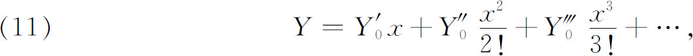
逐项控制着级数（8）。级数（11）是从（10）导出的，用的是由（7）导出（8）的相同办法。所以如果级数（11）收敛，那么（8）也就收敛。为了证明（11）收敛，就用（9）中F的值明显地解出（10），然后再证明解的级数展开必定是（11），并且收敛。
这方法本身确定不出关于y的级数的准确收敛半径，所以人们用大量的努力专注于证明这半径可以扩大。然而所有论文都没有给出全部收敛区域，所以没有多大实际的重要性。
确立常微分方程解的存在性的第三个方法（柯西也许是知道的），首先是刘维尔对一个二阶方程的情形发表出来的(28)。这就是逐次逼近法，今天已把荣誉归于皮卡，因为他给出了这方法的普遍形式(29)。对于实变量x和y的方程
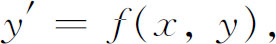
其中f（x，y）对x，y解析，方程的解y＝f（x）要通过点（x0，y0），这方法是引进一串函数
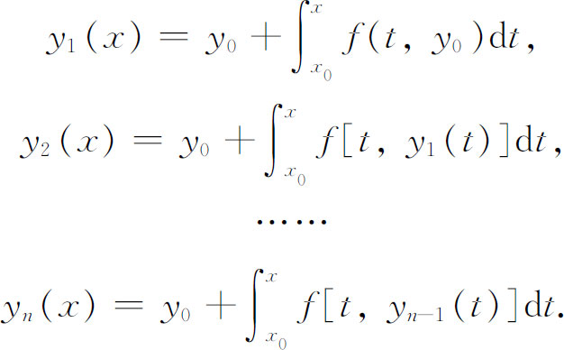
然后证明yn（x）趋于一极限y（x），它就是一个而且是唯一的一个满足常微分方程和y（x0）＝y0的x的连续函数。像今天通常所看到的，这方法须假定f（x，y）满足利普希茨条件。这方法已由皮卡在1893年的论文中用到二阶方程上去，并且还扩充到复的x，y的情形。
上述各种方法不仅已应用于高阶常微分方程，而且还应用于复变量的微分方程组。例如柯西就把他的第二类存在性定理推广到n个应变量的一阶常微分方程组。他还曾把这个极限计算方法推广到复域中的方程组(30)。柯西的结果现叙述如下：给定方程组
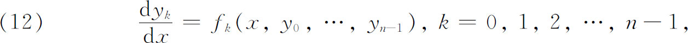
令
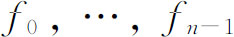
是其变量的单演（单值解析）函数，并设它们可在初值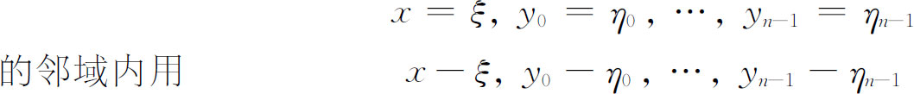
的正整数幂展开。于是有在x＝ξ的邻域内收敛的x-ξ的n个幂级数，把它们代入（12）的y0，…，yn-1时满足方程。这些幂级数是唯一的。它们给出方程组取初值的一个正则解。这个在普遍意义下的结果可以在柯西的《关于采用所谓极限计算的新计算法解微分方程组的报告》（Mémoire sur l'emploi du nouveau calcul，appelécalcul des limites，dans l'intégration d'un système d'équations différentielles）(31)中找到。这样，这一思想对建立解的存在性和在复平面上的一点邻域内求出这解来说，已是够满意的了。在同一年（1842）里，魏尔斯特拉斯曾得到同样的结果，但直到1894年才于全集上发表(32)。